Этап 1: мастера 512×512, только локально (_design/favicons/), на сайт ничего не выложено.
Источник — векторный знак темы (assets/img/favicon.svg, viewBox 0 0 44.17 51.39),
цвета — из assets/css/design-tokens.css. Шрифт вордмарка и монограммы — фирменный
Golos Text из assets/fonts/*.woff2.
head сайта нет ни rel="icon", ни apple-touch-icon; опция WordPress
«Иконка сайта» (site_icon) — не задана; файла favicon.ico в проекте нет.
Сейчас браузер показывает пустую иконку-заглушку..logo-mark + текст «САД ЗНАНИЙ» в шапке.
Значит «не растягивать исходник выше ×2» не актуально: исходник векторный, масштабируется без потерь.Символ + вордмарк «САД ЗНАНИЙ» — точная копия lockup'а из шапки
(Golos Text 700, межбуквенный .1em). Плюс: сразу узнаётся сайт.
Минус: во вкладке 16 px вордмарк превращается в полоску, знак мелкий.
Цвет: #20241F (--ink).
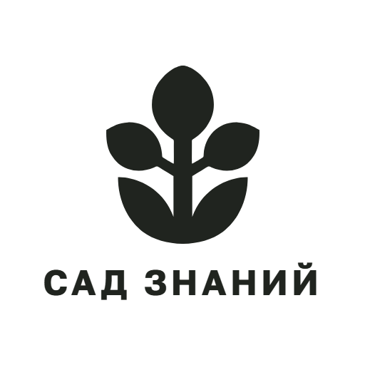
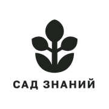
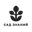
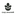
Файлы: мастер 512×512 PNG
Знак «росток в капле» крупно, поля ~10 %. Плюс: читается во всех размерах,
нет зависимости от шрифта — есть векторный мастер. Минус: не называет сайт.
Цвет: #20241F (--ink).
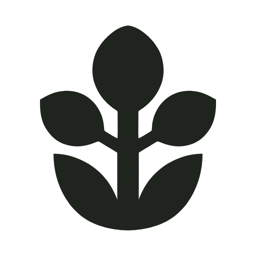
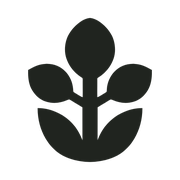
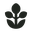
Плашка на весь холст, скругление 22 %, белые «СЗ» (Golos Text 700).
Плюс: максимальная читаемость в 16 px, цвет сразу выделяет вкладку среди серых.
Минус: буквы в шрифте — векторного мастера нет.
Цвета: плашка #68B96E (--accent), буквы #FFFFFF
(--accent-on).
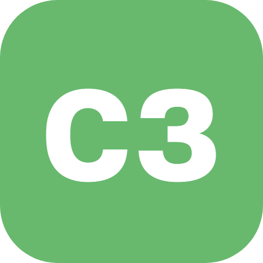
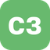
Файлы: мастер 512×512 PNG
Плашка с градиентом шапки, знак акцентным зелёным. Плюс: фирменная пара цветов,
знак читается и в 16 px, есть векторный мастер. Минус: тёмная иконка менее заметна в тёмной теме браузера.
Цвета: плашка #3A423B → #22271F (градиент шапки),
знак #68B96E (--accent).
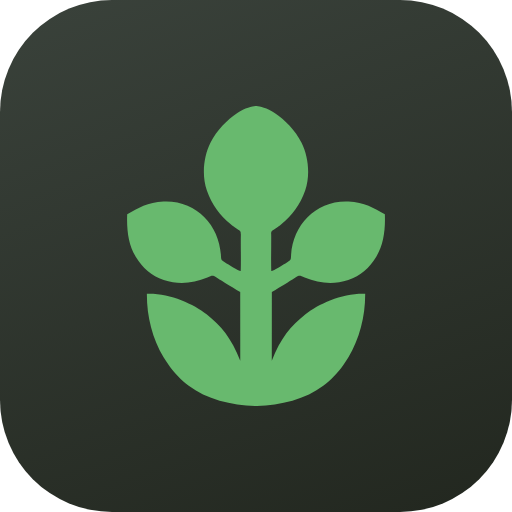
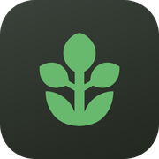
Тот же знак, что в В4, но белым на акцентном зелёном — сразу видно, «что за сайт».
Плюс: самый заметный вариант во вкладке, фирменный зелёный работает как маркер, есть векторный мастер.
Минус: контраст белого к зелёному ≈ 2,4:1, поэтому в 16 px тонкие лепестки чуть мягче, чем в В4.
Цвета: плашка #68B96E (--accent),
знак #FFFFFF (--accent-on).
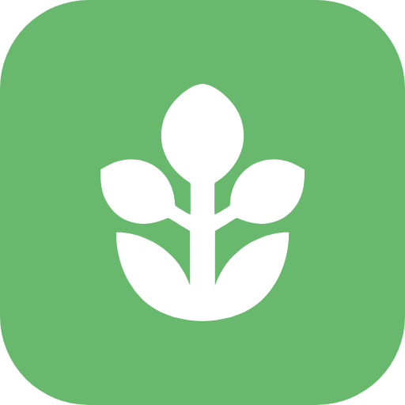
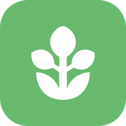